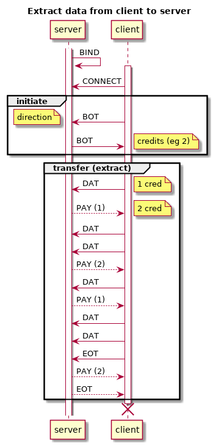
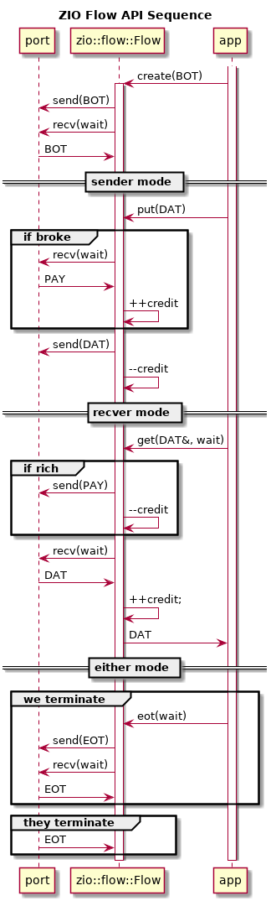
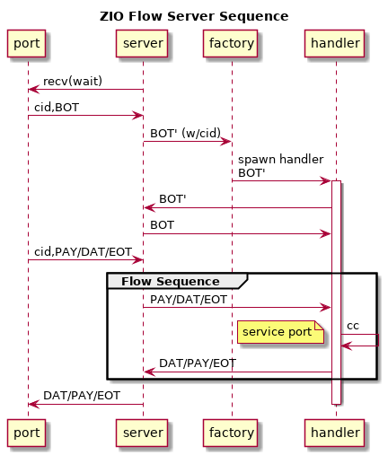

ZIO data flow
Table of Contents
ZIO data flow protocol supports one-way transmission of application-dependent payload messages between two ports with additional guarantees beyond those that are provided by ZIO ports in general. These guarantees include:
- The endpoints use only the ZeroMQ socket types CLIENT or SERVER.
- For any given transmission, the payload message flow may proceed in one direction only (CLIENT to SERVER or vice versa).
- The total number of messages buffered by the sockets at both endpoints combined will not exceed a given maximum.
- The client side may be safely used in an execution context serviced by different threads at different points in time. The server side is guaranteed only if it executes fully in one thread (although usual ZeroMQ inter-thread communication is allowed).
The benefits of these guarantees (some might call them restrictions or limitations) are described in the section of the ZeroMQ guide covering credit-based flow control.
1 API
// t.b.d // client cl.send() cl.recv() // server client (cl(s.recv()->spawn())
2 Flow protocol
The ZIO data flow protocol is partly illustrated in the UML sequence diagram below. It shows two phases: initiate and transfer. In initiate the client always sends to the server. In transfer the exchange depends on the parameters determined in the initiate phase.

In initate, the client sends a begin-of-transmission (BOT) message and
the server responds with another BOT. Either holds two required
values:
- direction : the direction (see below) of the flow from the point of view of the message sender.
- credits : the number of credits to use
The direction is one of two values: extract means endpoint will send payload data and inject means the endpoint expects to receive payload data.
The server receives the client's BOT and in forming its reply BOT
shall reverse the direction field and may adjust1 the
number of credits downward. The client receives the reply and shall
accept the number of credits.
Alternatively (and not shown in the diagram) the server may
immediately respond with end-of-transmission (EOT) if the request is
rejected.
The transfer state is then entered. It will proceed in one of the two
possible flow direction and these two variants are a mirror symmetry
of each other (with respect to exchange of client and server). If the
client BOT specifies the extract direction then the client side is
sender of payload messages, else it is the server side. The end which
is not the sender is the recver. These describe the direction of DAT
messages and PAY messages are sent in the opposite direction (sender
receives PAY). Like BOT, EOT travel both directions.
Regardless of the direction the transfer starts out by the recver
sending a number of credits in a PAY message and decrementing the
number of held credits by an equal amount. The recver may send
subsequent PAY messages anytime it posses credit and may send any
amount up to and including the amount currently held. A recver credit
is replenished one unit for every DAT message received.
The sender may send payload DAT message at any time it has credit.
Each DAT message depletes the credit held by the sender by one unit
and each PAY replenishes credit in the amount indicated in the
message.
At any point in time, either endpoint may explicitly terminate the
transmission by sending an EOT. If EOT is received, an endpoint shall
acknowledge the termination by echoing back an EOT. In the
illustration, the client initiates termination. This EOT is sent
quickly after two DAT messages for which the server has yet to
respond. Thus, the client will receive subsequent PAY messages prior
to the EOT acknowledgment. In order to assure all buffers on both
ends are flushed, it is important for the issuer of an EOT to continue
receiving until that EOT acknowledgment arrives and give a chance for
the application to process any DAT that may have arrived, if the
endpoint is a recver.
In real world applications the protocol may be interrupted at any
time. It provides no in-band support for handling interruptions other
than what may be provided by ZeroMQ. Using finite timeout with ZIO
flow protocol an application may consult a ZIO peer to determine if
the other end is still online or not.
3 Flow messages
ZIO data flow introduces a new ZIO message of type FLOW. This message
type has no meaningful "level" and so it is set to undefined (0). The
payload frames of a FLOW message are unused by the ZIO data flow
protocol and are available for application use. The protocol is
implemented using the label field of the ZIO message prefix header.
This field shall hold a string representing a JSON object which is
here called the flow object.
A flow object shall always have an attribute named flow the value of
which defines a (sub) message type in the data flow protocol. Any
FLOW message lacking this attribute may be dropped. The flow
attribute may hold a value of: BOT, EOT, DAT or PAY. Depending on the
value, additional attributes may be required or optional. The meaning
of these (sub) message types and their associated attributes are
described:
BOT- begin-of-transmission, client sends with
directionset toextractorinject, server sends withcreditsset to an integer.BOTexplicitly extends initial credit. EOT- end-of-transmission, either side may send, receiver should echo back. No associated attributes.
PAY- credit is extended from one endpoint to another as given in
the
creditattribute with a whole number value. DAT- the message payload holds an application specific encoded message and no additional attribute is associated.
The application may augment the flow object with additional attributes
and is free to fill the payload frame or frames of any FLOW message.
4 Flow API
ZIO provides an API to simply participating in a ZIO data flow
protocol. The central API class is zio::flow::Flow which may be used
by both sender and recver clients as well as part of a handler inside
a multi-client server. The following UML sequence diagram illustrates
the possible interactions between a Flow object, its port and the
application which owns it.

A Flow is created on a port by an application. The port should
already be online. A Flow is created with a BOT which is then sent
out the port and the Flow will wait for a BOT (or EOT) response.
Based on the BOT direction it will enter either sender or recver mode.
As described above, the BOT direction is from the point of view of the
source of the BOT message and so for example a Flow will be sender if
the BOT indicates the other endpoint wants direction inject.
Depending on the mode, the application may then call synchronous the
methods put() (sender mode) or get() (recver mode). Proper mode
operation may be asserted. During their calls, asynchronous
communication with the port proceeds and both may recv() messages from
the port. If a recv() returns and EOT (instead of the expected PAY or
DAT) these methods return false. The application should check this
return and call eot(), possibly with a zero timeout, to issue a reply.
Such an EOT would arise because either mode on either end may call
eot() at any time. When so initiated by the application, the timeout
should be non-zero to avoid loss of any messages still buffered in the
sockets. If an EOT reply is received, this method returns true. A
number of PAY (if sender) or DAT (if recver) messages may arrive
before the reply-EOT and they shall be discarded.
The Flow class is designed to be used both as the core of a ZIO flow
client and also as a client handler inside a multi-client ZIO flow
server. In order to achieve this symmetry, the server implementation
must perform a minor sleight-of-hand. This is illustrated in the
following UML sequence diagram.

In the illustration, the server listens on its own server port (a
SERVER socket) for FLOW messages coming from a Flow clients. When a
BOT is received from new client a local handler is constructed via a
factory. This handler executes as an actor (ZeroMQ zactor_t).
Internally, it operates exactly like shown in the ZIO Flow API
Sequence diagram except the zio::flow::Flow is constructed around a
port that wraps the PAIR socket of the actor pipe. The other end of
that pipe is held by the factory.
This is the first sleight-of-hand the server must do. The second is
in handling the BOT messages. The direction of the BOT from the
remote client must be reversed prior to being used in constructing the
handler as it tells the handler the direction it should operate in.
This reversed direction is labeled in the diagram as BOT'. The
handler is following the Flow API sequence diagramed above so simply
sends out this BOT' as if it were a remote client. To uphold that
fiction, the server must reverse yet again and send the final BOT'.
Thus, the flow server code acts as a proxy between a remote client and
its handler. The server is templated on the factory and so it is the
factory which ultimately determins the specific behavior of the
server. The constructed handlers are also application dependent code
but may use zio::flow::Flow exactly as a client would. This means
that the cartesian product of (server, client) \(\times\) (sender,
recver) does not have to result in four separate implementations and
all implementations can reuse the server and the Flow code.
5 Extending Flow API
As described in the section above on Flow messages, the payload and
header leable object attributes are in FLOW messages are available for
the application to use. In particular, the BOT, DAT and EOT messages
(but not PAY) enter application code on both ends.
Footnotes:
The number credits likely will be selected to limit memory usage on the server as it may be servicing multiple clients on multiple remote hosts.